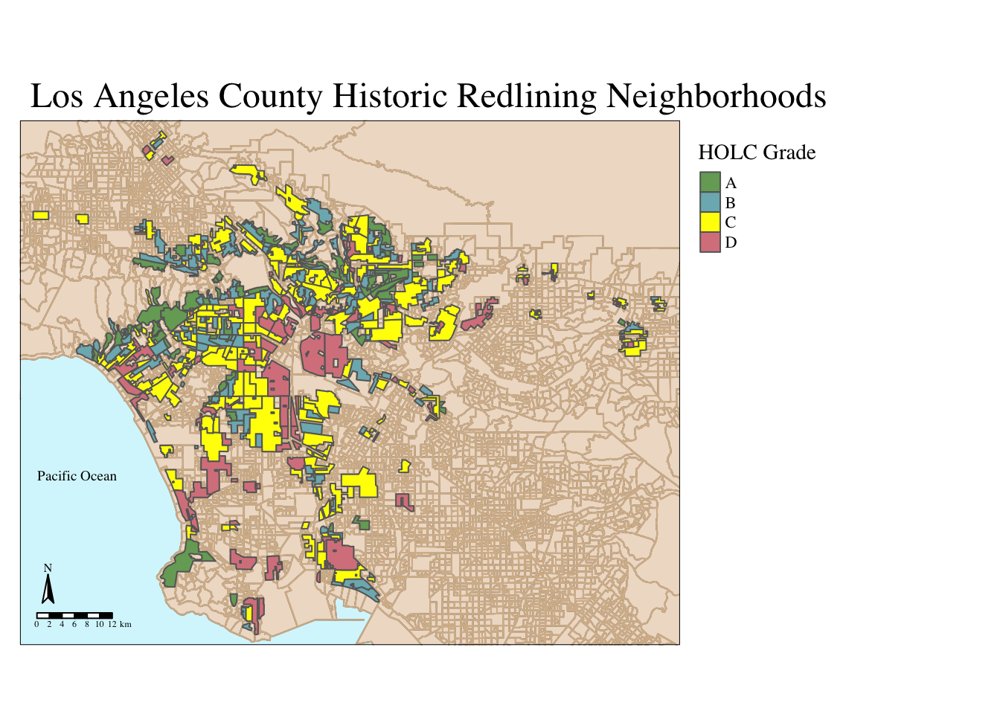
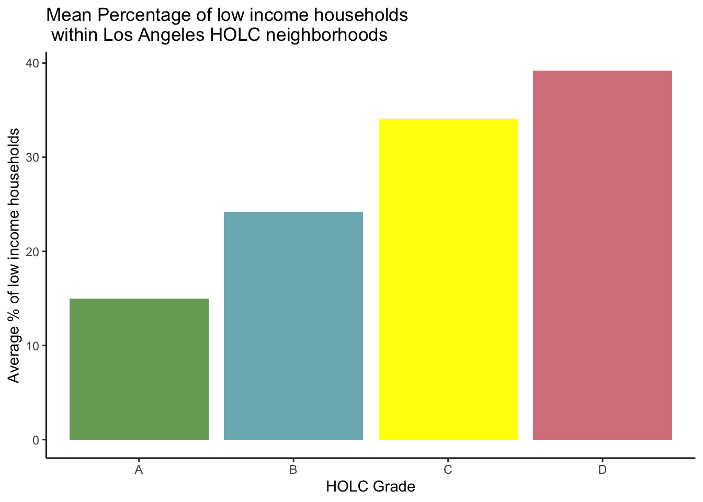
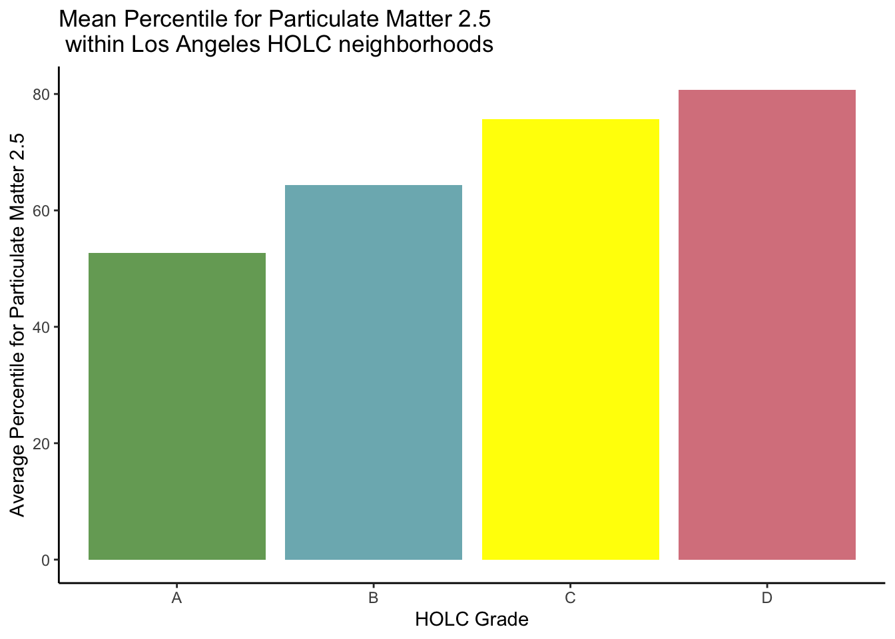
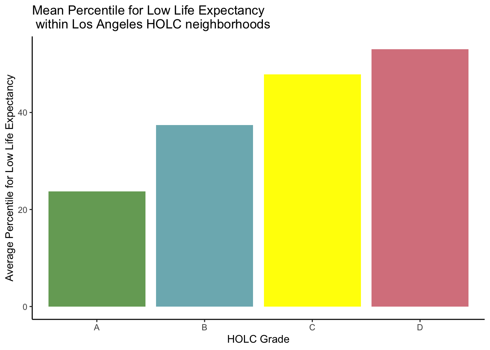
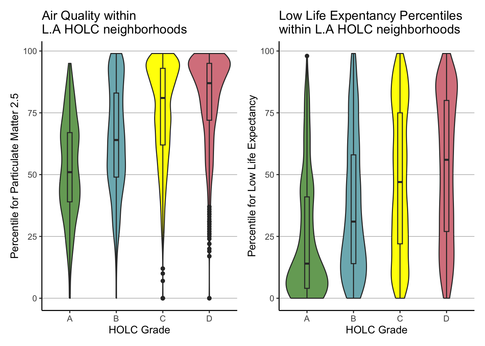
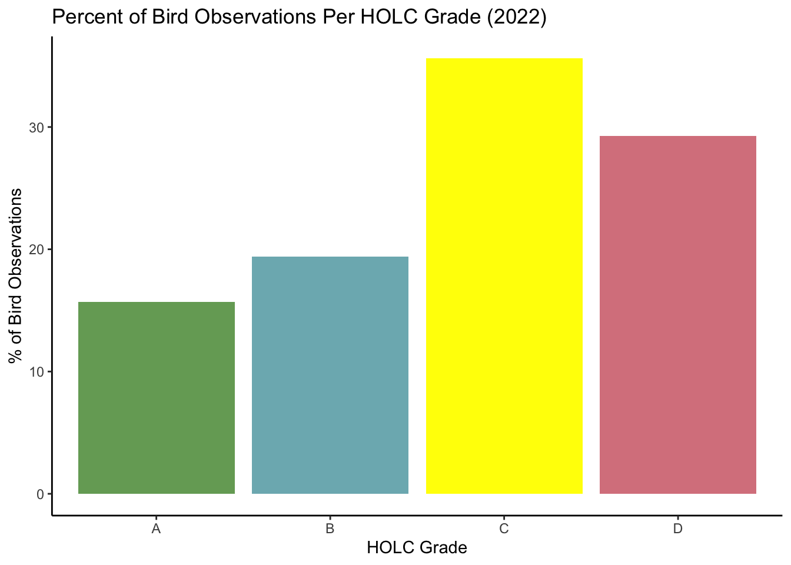
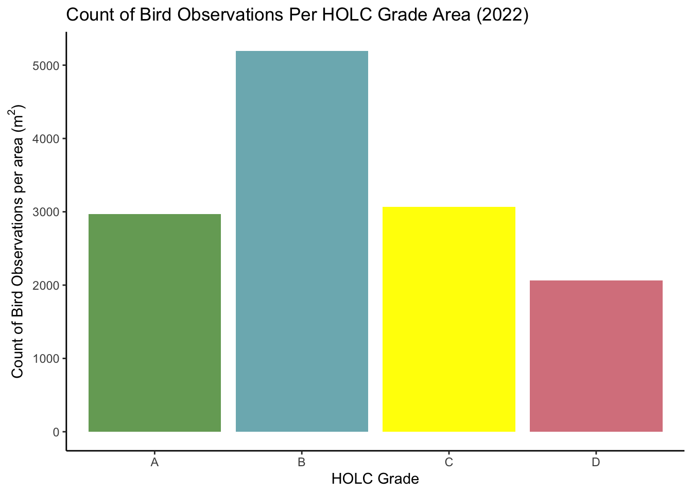

Show the code
# load libraries
library(tidyverse)
library(here)
library(tmap)
library(dplyr)
library(sf)
library(kableExtra)
library(patchwork)
library(testthat)Homework Assignment #2
# load libraries
library(tidyverse)
library(here)
library(tmap)
library(dplyr)
library(sf)
library(kableExtra)
library(patchwork)
library(testthat)# read in data
la_holc <- sf::st_read(here::here("data", "mapping-inequality", "mapping-inequality-los-angeles.json"))
la_birds <- sf::st_read(here::here("data", "gbif-birds-LA", "gbif-birds-LA.shp"))
ejscreen <- sf::st_read(here::here("data","ejscreen","EJSCREEN_2023_BG_StatePct_with_AS_CNMI_GU_VI.gdb")) Exploring historical redlining in Los Angeles and its legacy on present-day environmental justice.
# filtering ejscreen to only include counties that make up the greater LA area
la_ej <- ejscreen %>%
dplyr::filter(STATE_NAME == "California") %>%
dplyr::filter(CNTY_NAME %in% c("Los Angeles County", "San Bernardino County", "Orange County")) %>%
dplyr::filter((ID != '060379902000') & (ID != '060379903000')) # remove blocks in are in the ocean# removing NA values in the 'grade' column of la_holc
la_holc <- la_holc %>%
filter(!is.na(grade)) # remove the 1 NA valueclass(la_holc) [1] "sf" "data.frame"class(la_ej)[1] "sf" "data.frame"Both data sets are sf data frames.
# check that the coordinate reference systems match
if(st_crs(la_holc) == st_crs(la_ej)) {
print("The coordinate reference systems match")
} else {
print("The coordinate reference systems do NOT match. Transformation of CRS is recommended.")
}[1] "The coordinate reference systems do NOT match. Transformation of CRS is recommended."The CRS of la_holc and la_ej are not the same. In order to use these two data sets in the same map, the CRS of one needs to be transformed to match the other
# ensures the CRS of the two datasets will match
la_holc = st_transform(la_holc, crs = st_crs(la_ej))
# check to see if CRS match
if(st_crs(la_holc) == st_crs(la_ej)) {
print("The coordinate reference systems now match")
} else {
warning("The coordinate reference systems still do NOT match. Check that you did the transformation correctly")
}[1] "The coordinate reference systems now match"Now the CRS of each data set is matched.
# map of la county with the holc grades
tmap_mode('plot')
bbox_la <- st_bbox(la_holc) # bounding box to area of county with holc grades
tm_shape(la_ej, bbox = bbox_la) +
tm_polygons(col = "#EFDECD") + # county background color
tm_shape(la_ej) +
tm_borders(col = "#D6BA98") + # block border colors
tm_shape(la_holc) +
tm_polygons("grade", # la map colored by grade
palette = c("#76a865", "#7cb5bd", "#ffff00", "#d9838d"),
title = "HOLC Grade") +
tm_credits("Pacific Ocean",
position = c(0.02, 0.3), size = 0.6) + # pacific ocean label
tm_scale_bar(position = c(0.02, 0.02), width = 0.1) + # scale bar
tm_compass(position = c(0.01, 0.08), text.size = 0.5)+ # compass
tm_layout(bg.color = "#D7F7FD", # blue background color
legend.outside = TRUE,
fontfamily = "serif",
main.title = "Los Angeles County Historic Redlining Neighborhoods",
)
Map Description Home Owners’ Loan Corporation (HOLC) neighborhood rating system from the 1930’s. Grades were determined based on their perceived safety for real estate investment. The ranking system is as follows: A “Best”, B “Still desirable”, C “Declining”, D “Hazardous”.
In order to find the current census block groups within each HOLC grade, I need to use a topological operator to see which census groups (‘ID’) intersect with the HOLC neighborhood geometries.
There are many different ways to find this relationship, but I chose to use st_intersection. A caveat of this operator is that there is potential for double counting of census blocks if there are more than one HOLC grade neighborhood within the block.
# filter EJScreen to just Los Angeles county
la_county <- ejscreen %>%
dplyr::filter(CNTY_NAME == "Los Angeles County")
# join data sets to find overlapping geometries (interjoin will include NA values)
holc_census <- st_join(x = la_county, y = la_holc, join = st_intersects, left = TRUE) %>%
group_by(grade) %>%
summarise(count_blocks = n()) %>%# count of blocks in each HOLC grade
mutate(percentage = (count_blocks/sum(count_blocks)) *100) %>% # % of census blocks
st_drop_geometry() # dropping geometry for the table
# putting the info in a table
kable(holc_census,
col.names = c("HOLC grade",
"Count of census blocks",
"% of blocks within grade "),
caption = "Percentage of Census Block Groups per HOLC Grade") %>%
kable_styling(bootstrap_options = "striped", full_width = FALSE, position = "center")| HOLC grade | Count of census blocks | % of blocks within grade |
|---|---|---|
| A | 449 | 5.142595 |
| B | 1239 | 14.190814 |
| C | 3058 | 35.024625 |
| D | 1346 | 15.416333 |
| NA | 2639 | 30.225633 |
The NA value corresponds to the census block groups that do not intersect or touch any of the historic HOLC graded neighborhoods.
# test to see if percentages add up to 100
test_that("Percetange values add to 100", {expect_true(sum(holc_census$percentage) == 100) })Test passed 🎉By combining the historic HOLC neighborhood data with current Environmental Justice data we can examine how the HOLC grade neighborhoods fair today with certain environmental and socioeconomic markers.
# join holc and ej data, summarise low income, air quality, and low life expectancy
holc_ej_join <- st_join(x = la_holc, y = la_county, join = st_intersects, left = TRUE) %>%
group_by(grade) %>%
summarise(count_blocks = n(),
avg_pct_lowincome = mean(LOWINCPCT)*100,
avg_pct_pm = mean(P_D2_PM25),
avg_pct_lowlife = mean(P_LIFEEXPPCT, na.rm = TRUE)) %>%
st_drop_geometry()I chose not to include information about the following parameters in areas outside of the HOLC grade neighborhoods.
# bar graph to display results
ggplot(data = holc_ej_join, aes(x = grade, y = avg_pct_lowincome, fill = grade)) +
geom_col() +
scale_fill_manual(values = c("A" = "#76a865", "B" = "#7cb5bd", "C" = "#ffff00", "D" = "#d9838d")) +# bar colors
labs(x = 'HOLC Grade',
y = 'Average % of low income households',
title = 'Mean Percentage of low income households \n within Los Angeles HOLC neighborhoods') +
theme_classic() +
theme(legend.position = "none")
# bar graph to display results
ggplot(data = holc_ej_join, aes(x = grade, y = avg_pct_pm, fill = grade)) +
geom_col() +
scale_fill_manual(values = c("A" = "#76a865", "B" = "#7cb5bd", "C" = "#ffff00", "D" = "#d9838d")) +# bar colors
labs(x = 'HOLC Grade',
y = 'Average Percentile for Particulate Matter 2.5',
title = 'Mean Percentile for Particulate Matter 2.5 \n within Los Angeles HOLC neighborhoods') +
theme_classic() +
theme(legend.position = "none")
# bar graph to display results
ggplot(data = holc_ej_join, aes(x = grade, y = avg_pct_lowlife, fill = grade)) +
geom_col() +
scale_fill_manual(values = c("A" = "#76a865", "B" = "#7cb5bd", "C" = "#ffff00", "D" = "#d9838d")) +# bar colors
labs(x = 'HOLC Grade',
y = 'Average Percentile for Low Life Expectancy',
title = 'Mean Percentile for Low Life Expectancy \n within Los Angeles HOLC neighborhoods') +
theme_classic() +
theme(legend.position = "none")
It is also important to recognize that the Environmental Justice Screen demographic indicators were collected using Census Bureau’s ACS 2017-2021 5-year Summary.
Particulate Matter (PM) 2.5 values are derived from 2019 source data from EPA’s Office of Air Quality Planning and Standards (OAQPS), Non-attainment areas (NAA).
In addition to viewing the average values of the EJ Screen parameters, I believe it is important to also examine the spread of densities.
# filter la_county to only include 'Shape', 'ID' and 'P_D2_PM25'
la_air_quality <- la_county %>%
select('Shape', 'ID', 'P_D2_PM25')
# join PM data with HOLC data
holc_pm <- st_join(x = la_holc, y = la_air_quality, join = st_intersects, left = TRUE)
# violin plot to show densities
fig1<- ggplot(holc_pm, aes(x = grade, y = P_D2_PM25, fill = grade)) +
geom_violin() +
scale_fill_manual(values = c("A" = "#76a865", "B" = "#7cb5bd", "C" = "#ffff00", "D" = "#d9838d")) + # bar colors
geom_boxplot(width=0.1) + # box plot to show interquartile range
labs(x = "HOLC Grade",
y = "Percentile for Particulate Matter 2.5",
title = "Air Quality within \nL.A HOLC neighborhoods") +
theme_classic() +
theme(legend.position = "none",
panel.grid.major.y = element_line(color = "darkgrey",
size = 0.25,
linetype = 1))
# filter la_county to only include 'Shape', 'ID' and 'P_LIFEEXPPCT'
la_low_life <- la_county %>%
select('Shape', 'ID', 'P_LIFEEXPPCT')
# join PM data with HOLC data
holc_low_life <- st_join(x = la_holc, y = la_low_life, join = st_intersects, left = TRUE)
# violin plot to show denisties
fig2<- ggplot(holc_low_life, aes(x = grade, y = P_LIFEEXPPCT, fill = grade)) +
geom_violin() +
scale_fill_manual(values = c("A" = "#76a865", "B" = "#7cb5bd", "C" = "#ffff00", "D" = "#d9838d")) + # bar colors
geom_boxplot(width=0.1) + # box plot to show interquartile range
labs(x = "HOLC Grade",
y = "Percentile for Low Life Expectancy",
title = "Low Life Expentancy Percentiles \nwithin L.A HOLC neighborhoods") +
theme_classic() +
theme(legend.position = "none",
panel.grid.major.y = element_line(color = "darkgrey",
size = 0.25,
linetype = 1))
(fig1 | fig2)
Based on the figures above, it appears that across the different parameters—low-income households, particulate matter percentiles, and low life expectancy—the negative effects became more pronounced as the neighborhood grade decreased. This trend suggests a correlation between historic redlining practices and current environmental injustices. However, further statistical analyses would be necessary to determine if these differences are statistically significant across the different grades. Such analyses would help confirm whether these disparities are directly linked to the historic grading system or other factors. This initial observation underscores how historic neighborhood grading has contributed to present-day environmental discrimination, where marginalized communities are disproportionately exposed to adverse living conditions and health risks.
Exploring the legacy of historical redlining in Los Angeles on the collection of bird observations.
First, we need to see if the bird observations and the HOLC grade neighborhood data is operating under the same coordinate reference system.
# check if data has same crs
if(st_crs(la_holc) == st_crs(la_birds)) {
print("The coordinate reference systems match")
} else {
print("The coordinate reference systems do NOT match. Transformation of CRS is recommended.")
}[1] "The coordinate reference systems do NOT match. Transformation of CRS is recommended."Now the CRS of la_birds can be transformed to match la_holc
# ensures the CRS of the two datasets will match
la_birds = st_transform(la_birds, crs = st_crs(la_holc))
# check to see if CRS match
if(st_crs(la_holc) == st_crs(la_birds)) {
print("The coordinate reference systems now match")
} else {
warning("The coordinate reference systems still do NOT match. Check that you did the transformation correctly")
}[1] "The coordinate reference systems now match"In order to figure out how many bird observations were recorded in each HOLC grade in 2022, the observation data and HOLC grade neighborhood spatial data needs to be joined. Then, the percentage of bird observations is found by taking the number of bird observations per grade divided by the total number of bird observations across all four grades. I have decided not to include the observations that do not fall within the bounds of the HOLC grade neighborhoods.
# join spatial data to observation data
holc_bird_pct <- st_join(x = la_holc, y = la_birds, join = st_intersects, left = FALSE) %>%
filter(year == 2022) %>%
group_by(grade) %>%
summarise(obs_count = n()) %>% # total observations per grade
mutate(obs_pct = (obs_count / sum(obs_count)) * 100) %>% # percent of observations per grade
st_drop_geometry()It is important when performing joins that your new dataset has all the information that is important to you. In this test, I am going to double check that the percentages are all above 0% and below 100%.
# Test that percentages are positive and below 100%
test_that("All % values are above zero", {
expect_true(all((holc_bird_pct$obs_pct > 0) & holc_bird_pct$obs_pct <= 100 ))
})Test passed 🥳# put the percentage info in a bar graph
ggplot(data = holc_bird_pct, aes(x = grade, y = obs_pct, fill = grade)) +
geom_col() +
scale_fill_manual(values = c("A" = "#76a865", "B" = "#7cb5bd", "C" = "#ffff00", "D" = "#d9838d")) +# bar colors
labs(x = 'HOLC Grade',
y = '% of Bird Observations',
title = 'Percent of Bird Observations Per HOLC Grade (2022)') +
theme_classic() +
theme(legend.position = "none")
Looking at the graph, it seems that there are more bird observations with the C and D grades, which does not match the match the findings from Ellis-Soto et al. 2023. However, this graph above does not account for the area that each grade occupies. Let’s see if we can rework these observations scaled by area.
# join data and find obs per area of grade
holc_birds_area <-st_join(x = la_holc, y = la_birds, join = st_intersects, left = FALSE) %>%
filter(year == 2022) %>%
group_by(grade) %>%
summarise(grade_area_total = sum(area, na.rm = TRUE), # find total area of each grade
obs_count = n()) %>%
mutate(obs_per_area = obs_count/grade_area_total) %>% # observations per area
st_drop_geometry()
# put the count/area info in a bar graph
ggplot(data = holc_birds_area, aes(x = grade, y = obs_per_area, fill = grade)) +
geom_col() +
scale_fill_manual(values = c("A" = "#76a865", "B" = "#7cb5bd", "C" = "#ffff00", "D" = "#d9838d")) +# bar colors
labs(x = 'HOLC Grade',
y = expression('Count of Bird Observations per area (m'^2*')'),
title = 'Count of Bird Observations Per HOLC Grade Area (2022)') +
theme_classic() +
theme(legend.position = "none")
Looking at the graph of bird observations per area, we can see that there is generally a higher percentage of observations in the higher-rated areas (A and B) compared to the lower-rated areas (C and D). This pattern contrasts with the previous graph because the lower-rated areas cover a much larger geographic region than the higher-rated areas. These results align more closely with the findings from Ellis-Soto et al. (2023). However, it’s important to recognize that these observations might not fully capture the true picture of biodiversity, as there may be biases in data collection favoring wealthier areas, where more observations are likely to occur.
Nelson, R. K., Winling, L, et al. (2023). Mapping Inequality: Redlining in New Deal America. Digital Scholarship Lab. https://dsl.richmond.edu/panorama/redlining.
United States Environmental Protection Agency. 2024 version. EJScreen. Retrieved: [October, 15, 2024, from url www.epa.gov/ejscreen]
The Global Biodiversity Information Facility. Accessed via https://drive.google.com/file/d/14CauXFZkVh_6z2Euq0m1Sq1kHQ31fiMk/view?usp=sharing [15 October 2024]